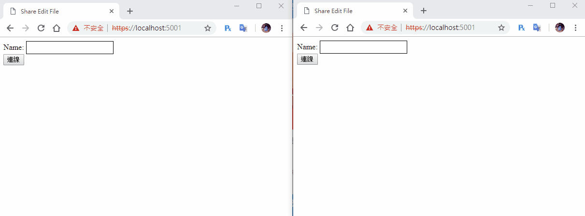

[鐵人賽Day27] 實作Web即時共同編輯文件 (7) - 新增自訂文件及載入自訂文件
文章目錄
今天就來完成最後的部分吧！最後要載入和建立自訂的文件，首先來先來做建立的部分
建立自訂文件
首先先建立切換畫面事件，讓建立文件的Button能切換頁面
goCreateFileBtn.addEventListener('click',function(){
// 切換成建立文件選擇畫面
fileListDiv.style.display = 'none';
createFileDiv.style.display = '';
});
建立文件畫面
再來是建立文件的畫面
<button id="cancelCreateFile" type="button" >取消</button><br><br>
文件名稱：<input id="newFileName" type="text" class="input"><br><br>
欄位數：<input id="newCol" type="text" class="input"><br><br>
列位數：<input id="newRow" type="text" class="input"><br><br>
<button id="createFileBtn" type="button">建立文件</button><br>
讀取DOM
var cancelCreateFile = document.getElementById('cancelCreateFile');
var createFileBtn = document.getElementById('createFileBtn');
建立新增文件事件
新增取消建立文件按鈕事件，讓他返回文件選擇畫面
cancelCreateFile.addEventListener('click',function(){
// 切換成文件選擇畫面
createFileDiv.style.display = 'none';
fileListDiv.style.display = '';
});
新增建立按鈕事件，把Form的資料都丟回去就行，接收部分一樣是connection.on("ReceiveUserList")，昨天已經建立了，所以就不需要接收事件了，成功後用.then()切換畫面，因為connection.on("ReceiveUserList")不只有建立文件時接收，所以改成.then()裡面。
createFileBtn.addEventListener('click', function () {
var newFileName = document.getElementById('newFileName').value;
var newRow = document.getElementById('newRow').value;
var newCol = document.getElementById('newCol').value;
connection.invoke("CreateFile", newFileName, newCol, newRow).then(function(){
// 切換成文件列表畫面
createFileDiv.style.display = 'none';
fileListDiv.style.display = '';
}).catch(function (err) {
return console.error(err.toString());
});
});
再來到後端的FileHub引用泛型和Models
using System.Collections.Generic;
using EditFileWeb.Models;
然後到建立一個方法CreateFile，內容跟之前建立測試文件一樣，只要把內容換成前端Form傳回的值就行
public async Task CreateFile(string fileName, int col, int row)
{
var fileModel = new FileModel();
fileModel.creator = Context.ConnectionId;
fileModel.filename = fileName;
fileModel.row = row;
fileModel.column = col;
fileModel.editor = new List<UserModel>();
List<CellModel> textList = new List<CellModel>();
for (int i = 0; i < col; i++)
{
for (int j = 0; j < row; j++)
{
var cellModel = new CellModel();
cellModel.lockState = true;
cellModel.text = "";
cellModel.cellName = $"{i}{j}";
textList.Add(cellModel);
}
}
fileModel.textList = textList;
_service.AddFile(fileModel);
await Clients.All.SendAsync("ReceiveFileList", _service.GetFileList());
}
讀取文件部分修改
回到前端部分，讀取文件的按鈕事件，先把讀取中的LoadFile對象換成選擇的文件fileName，再來因為我們已經多了名稱的機制，所以讀取文件時多傳一個name回去
// 取得文件按鈕事件
getFileBtn.addEventListener('click', function () {
// 去得選擇文件的名稱
var fileName = document.getElementById('fileList').value;
// 使用中的文件變數
LoadFile = fileName;
connection.invoke("GetFile", fileName, name).catch(function (err) {
return console.error(err.toString());
});
});
建立表格的方式我們不需要改，只需加入切換畫面就好
connection.on("ReceiveFile", function (file) {
// 切換成文件編輯畫面
fileListDiv.style.display = 'none';
fileDiv.style.display = '';
// 建立文件
// 略....
});
使用者清單改用名稱顯示
connection.on("ReceiveUserList")改成使用name來判斷是不是自己，塞進去的名稱也改成name
connection.on("ReceiveUserList", function (userListData) {
userList.innerHTML = '';
for (var i = 0; i < userListData.length; i++) {
var user = document.createElement('span');
user.id = userListData[i].id;
user.className = 'user';
var userColor = document.createElement('div');
userColor.className = 'userColor';
userColor.style.backgroundColor = userListData[i].color;
user.appendChild(userColor);
// 判斷對象改成名稱
if (name == userListData[i].name)
user.append('自己');
else
user.append(userListData[i].name); // 改成塞進名稱
userList.appendChild(user);
}
});
後端也需要修改，首先是FileService的AddUser，需要增加接收一個使用者名稱變數name，然後塞進UserModel容器內。
public bool AddUser(string fileName, string id, string name)
{
// 找出哪個file
var file = (from f in list where f.filename == fileName select f).FirstOrDefault();
var userModel = new UserModel();
var rnd = new Random();
userModel.id = id;
userModel.name = name;
// 顏色隨機產生
userModel.color = $"rgb({rnd.Next(0, 255)}, {rnd.Next(0, 255)}, {rnd.Next(0, 255)})";
file.editor.Add(userModel);
return true;
}
再來FileHub部分，也是多一個名稱變數，使用AddUser新增進去就行。
public async Task GetFile(string fileName, string name)
{
// 取得文件
var file = _service.GetFile(fileName);
// 加入使用者
_service.AddUser(fileName, Context.ConnectionId, name);
await Clients.All.SendAsync("ReceiveUserList", _service.GetUserList(fileName));
await Clients.Caller.SendAsync("ReceiveFile", file);
}
這樣就大功告成啦！！！
DEMO
 發現時間有點長，多個影片版
做完這邊發現有不少BUG，明天再來把這些小BUG慢慢地修正完成！